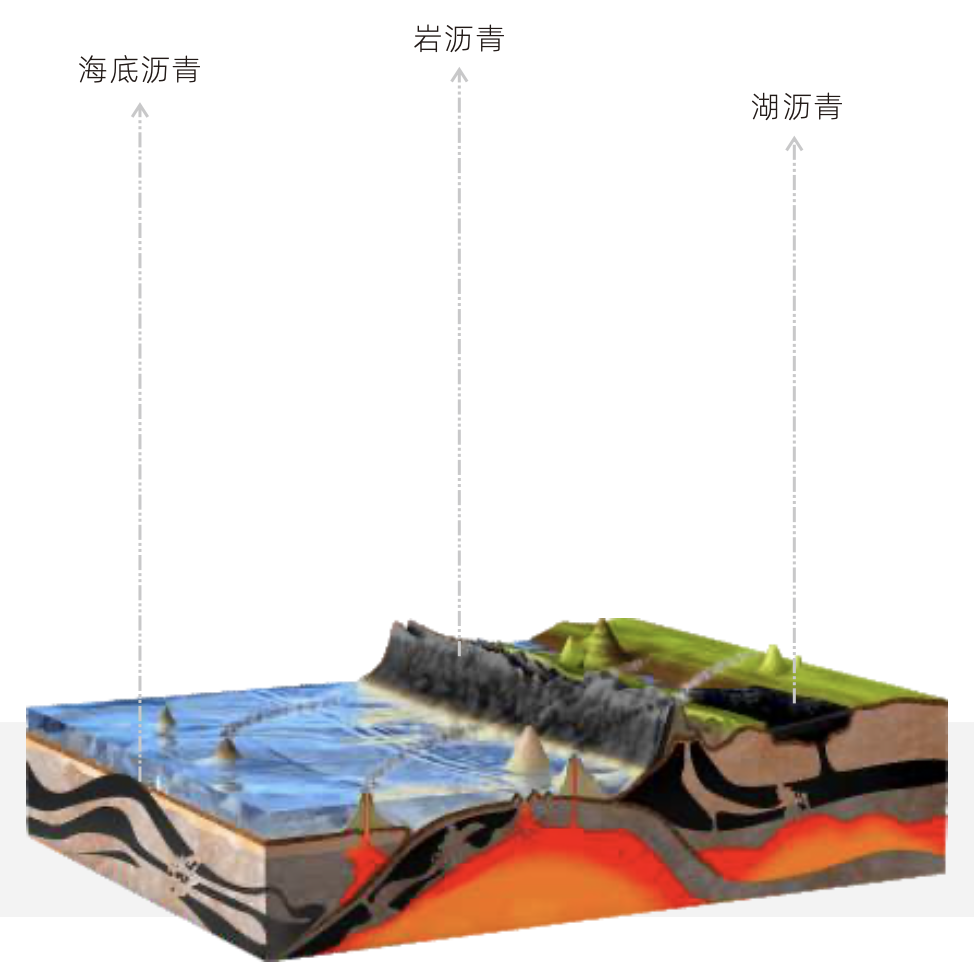
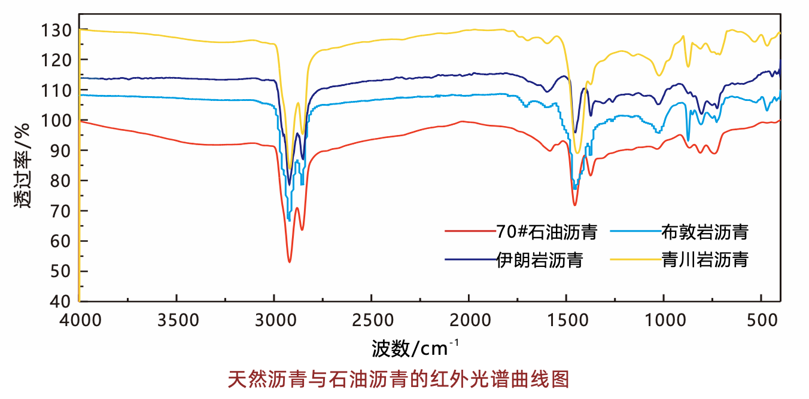
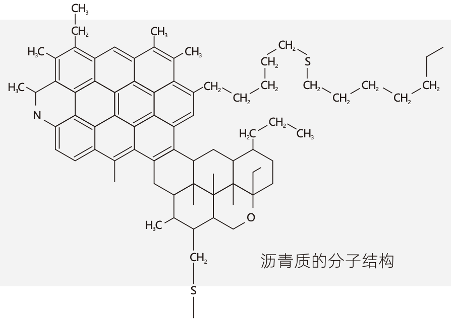
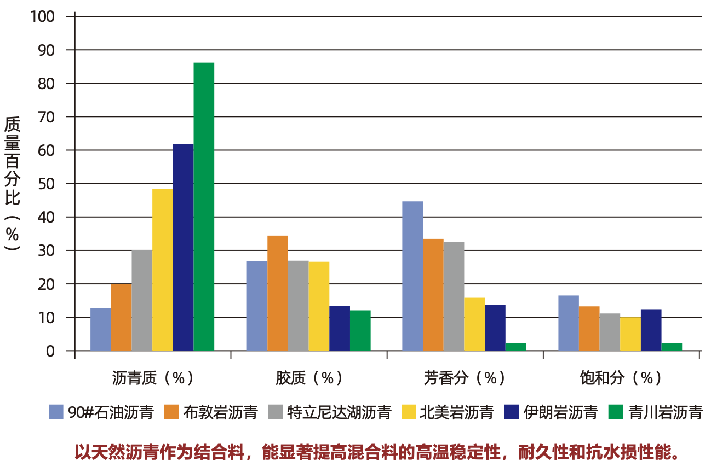
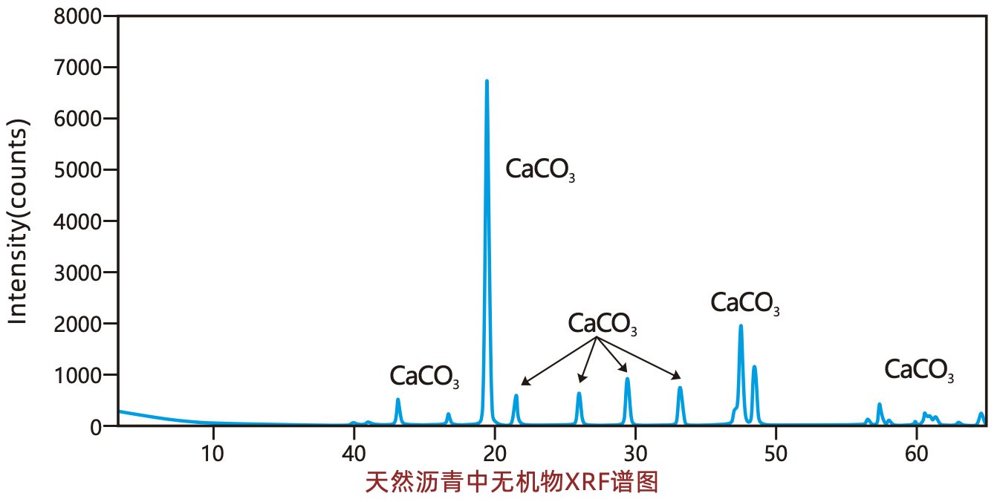

天然沥青定义及分类
原油经过通过亿万年的地壳运动作用，在高温、高压、触媒 等综合作用下自然形成的地沥青类物质，含有一定比例无机物， 按形成环境不同可分为岩沥青、湖沥青、海底沥青。
作为一种低碳环保的绿色建筑材料，天然沥青路用性能优 异，已在港珠澳大桥、矮寨大桥、首都机场、长安街、北京三环 线、上海虹桥机场等众多重点工程中采用。
天然沥青与石油沥青同源
天然沥青与石油沥青同属于地沥青类，其有机部分均由碳氢化合物及其衍生物构成，二者的红外光谱 图基本吻合。因此天然沥青中的有机部分可以和石油沥青实现完全互溶，不存在传统聚合物改性剂的“不溶”或“降 解”问题。
天然沥青富含沥青质
天然沥青在其亿万年的形成过程中，在地壳高温高压作用下，小分子不断聚合形成大分子，因此和石油沥青相比，天然沥青中大分子的组分更多。沥青的四组分分析的结果显示，天然沥青中沥青质和胶质含 量远高于石油沥青、且饱和分含量低。
 * 沥青质是强的增稠剂，影响沥青 的粘附性，能显著提升沥青粘度和粘 结力 。
* 沥青中的极性官能团主要分布在 沥青质和胶质中，它们与集料之间的 吸附是极性吸附与化学吸附，一旦发生很难脱附。
天然沥青的无机物
天然沥青中无机物主要成分为碳酸钙。沥青混合料是一个多级分散体系，其中起粘结作用的是沥青胶浆，天然沥青中的碳酸钙和沥青共生了亿万年，达到天然沥青胶浆的效果，其强度远超由沥青和矿粉构成的人造胶浆。因此能极大提高混合料中结合料的粘结力，使混合料具有更高的强度和抗水损性。
